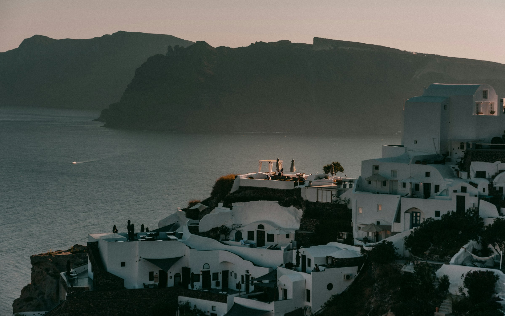
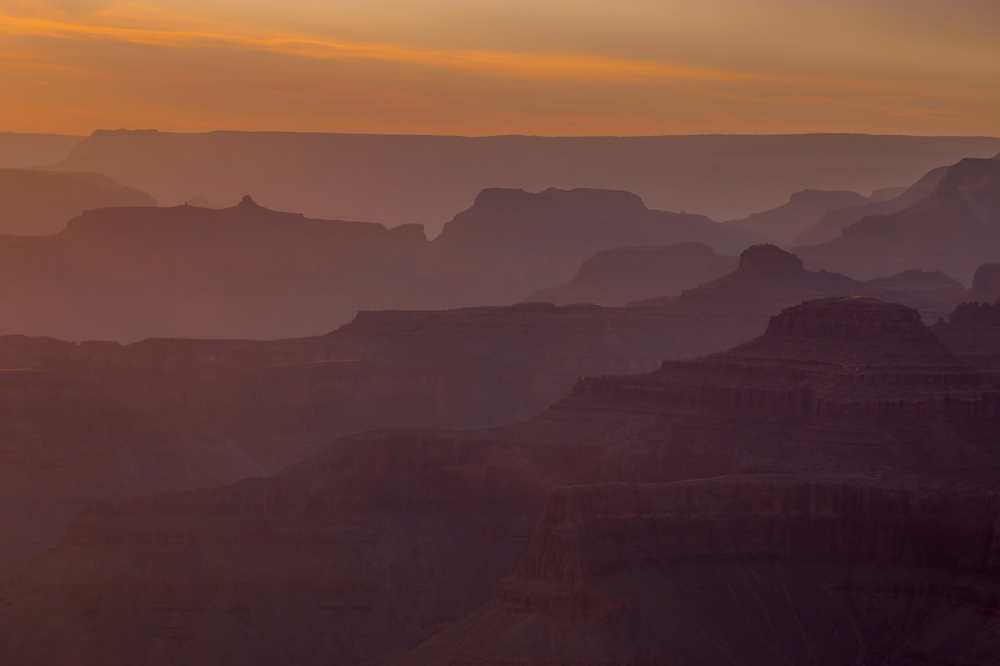
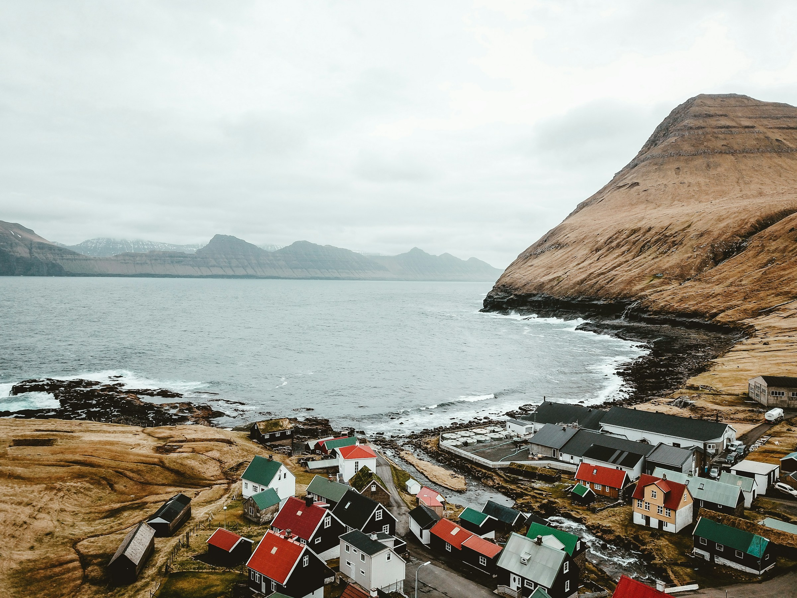
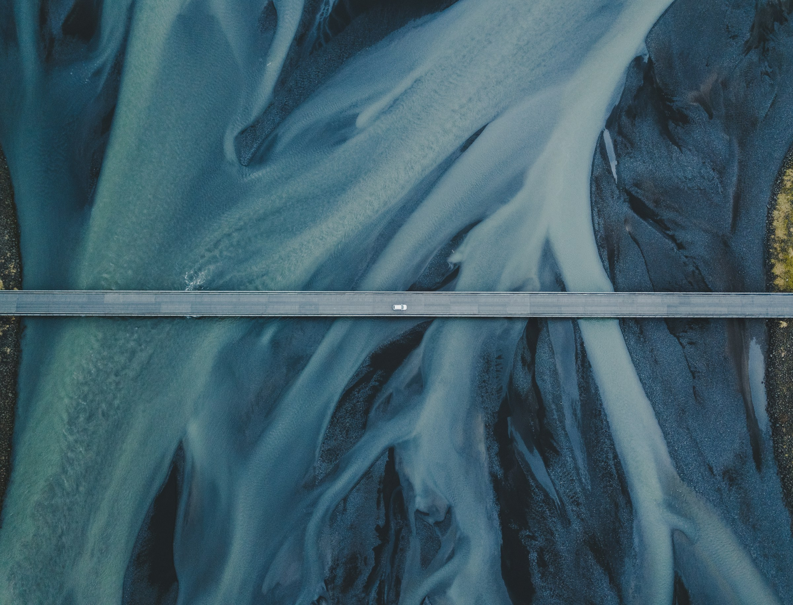
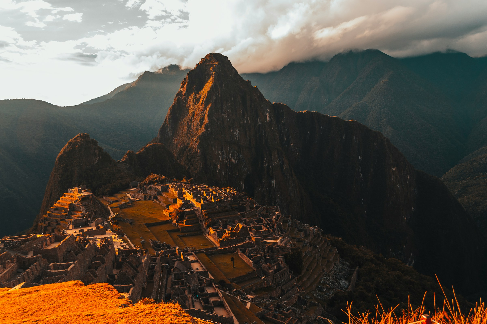
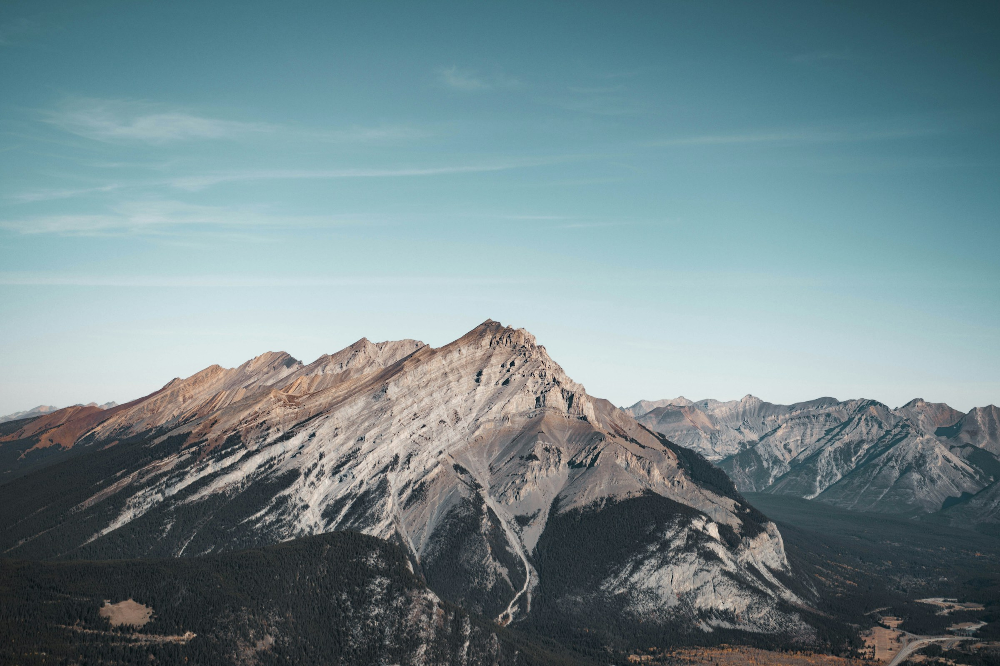

Top 10 Scenic Locations for Drone Photography
Drone photography allows photographers to capture stunning, bird's-eye views of the world. Whether you're an avid traveler or just looking for breathtaking spots to hone your drone photography skills, there are countless scenic locations that offer unmatched perspectives. In this blog, we’ll explore ten of the best locations around the world to capture awe-inspiring drone shots.
1. Santorini, Greece
Photo by XAVIER PHOTOGRAPHY on Unsplash
The iconic whitewashed buildings and crystal-clear waters of Santorini make it a dream destination for drone photographers. The island's steep cliffs and charming architecture contrast beautifully with the blue of the Aegean Sea. At sunrise and sunset, the golden light adds a magical touch to aerial photos.
Best Time to Shoot: Early morning or late afternoon, to avoid harsh midday light and tourists.
2. Grand Canyon, USA
Photo by Dayne Topkin on Unsplash
The vast, rugged landscape of the Grand Canyon is a drone photographer's paradise. The dramatic cliffs, winding river, and expansive views create perfect conditions for capturing nature’s grandeur from above. The sheer scale of the canyon is hard to grasp from the ground, making aerial shots truly impressive.
Best Time to Shoot: Sunset or sunrise, when the canyon's colors are at their most vibrant.
3. Faroe Islands
Photo by Annie Spratt on Unsplash
With their dramatic cliffs, lush green landscapes, and rough seas, the Faroe Islands offer some of the most jaw-dropping drone photography opportunities in Europe. The islands are remote and often shrouded in mist, adding an element of mystery to your aerial shots.
Best Time to Shoot: During the summer months when the weather is milder.
4. Iceland
Photo by Michelle Spollen on Unsplash
Iceland's otherworldly landscapes are made for drone photography. From towering waterfalls and geysers to black sand beaches and volcanic landscapes, this country offers diverse and unique aerial shots. The famous Seljalandsfoss waterfall and the vast glaciers of Vatnajökull National Park are particularly popular.
Best Time to Shoot: Summer, for the midnight sun and lush greenery, or winter for snowy landscapes and the Northern Lights.
5. Great Barrier Reef, Australia
The vibrant colors and unique formations of the Great Barrier Reef are best appreciated from above. Drone photography allows you to capture the sprawling coral reef in all its glory, highlighting its intricate patterns and stunning shades of blue and turquoise.
Best Time to Shoot: On a clear, sunny day when the water is calm, allowing for sharp reflections of the reef.
6. Machu Picchu, Peru
Photo by Sebastian Tapia Huerta on Unsplash
Perched high in the Andes Mountains, the ancient Incan city of Machu Picchu is a must-visit location for drone photographers. The combination of steep terraces, stone structures, and the surrounding lush mountains creates a surreal landscape. Just be sure to check regulations before flying.
Best Time to Shoot: During the midnight sun in summer or for dramatic snow-covered landscapes in winter.
7. Banff National Park, Canada
Photo by Harsh Singh on Unsplash
With its crystal-clear lakes, towering mountains, and dense forests, Banff National Park in Alberta, Canada, offers some of the most picturesque drone photography opportunities in North America. Lake Louise and Moraine Lake are two standout locations where the striking turquoise waters make for dramatic aerial shots.
Best Time to Shoot: During fall when the colors of the changing leaves add contrast to the blue lakes.
8. Dubai, UAE
For those who enjoy urban landscapes, Dubai offers a futuristic setting perfect for drone photography. The city's towering skyscrapers, like the Burj Khalifa, alongside the contrast of desert landscapes and the Persian Gulf, create visually dynamic aerial shots.
Best Time to Shoot: At sunrise or sunset when the city is bathed in golden light, highlighting its architecture.
9. New Zealand's South Island
New Zealand's South Island is famous for its diverse landscapes, ranging from towering mountains and fjords to serene beaches and rolling green hills. Drone photography here offers endless opportunities for breathtaking shots, especially in places like Milford Sound and the Southern Alps.
Best Time to Shoot: Late spring or early fall, when the weather is more stable and crowds are smaller.
10. Lofoten Islands, Norway
The dramatic peaks, fjords, and clear waters of the Lofoten Islands in Norway make this one of the most scenic drone photography locations in the world. The region is known for its rugged beauty and, in the summer, the midnight sun allows for long hours of shooting in soft light.
Best Time to Shoot: Summer, for the midnight sun or winter if you're hoping to capture the Northern Lights from the air.
Honorable Mention: The Dolomites, Italy
While the top 10 locations we've covered are must-visit spots for drone photography, the Dolomites in northern Italy deserve an honorable mention. This stunning mountain range offers a mix of dramatic peaks, lush valleys, and charming villages, making it a paradise for aerial photography. The rugged cliffs and jagged formations of the Dolomites, combined with the region's picturesque alpine scenery, provide incredible opportunities for capturing breathtaking drone shots.
Whether you're photographing the iconic Tre Cime di Lavaredo or the serene alpine lakes like Lago di Braies, the Dolomites offer endless possibilities for creating striking aerial images. If you're looking for a European location with both natural beauty and diverse landscapes, the Dolomites are a fantastic addition to your drone photography bucket list.
Final Thoughts
Drone photography opens up a whole new world of visual possibilities, allowing photographers to capture breathtaking landscapes from unique perspectives. Whether you're shooting rugged natural scenes or bustling urban centers, the locations above offer some of the most awe-inspiring settings for drone photographers. Always check local regulations before flying and be mindful of nature to ensure these stunning places remain pristine for future photographers.